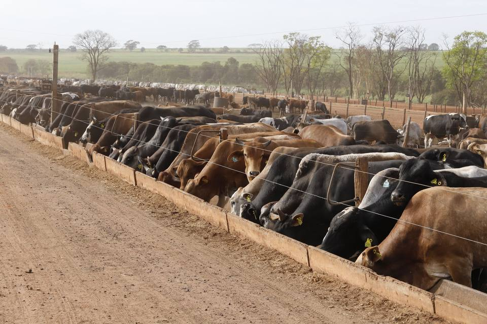
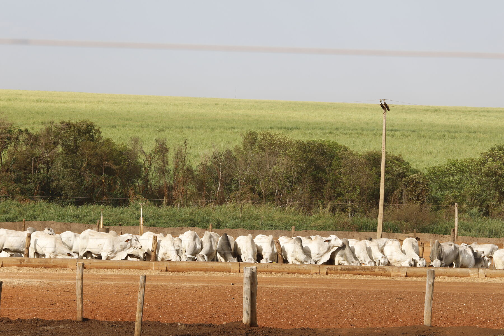

Valorize sua arroba.
Do pequeno criador ao grande invernista: modelos flexíveis que se adaptam à sua estratégia, com transparência de balança do primeiro dia ao processamento.
Modelos de parceria.
A CMA oferece diferentes modelos de parceria, permitindo que o pecuarista escolha a alternativa mais adequada à sua estratégia de produção e comercialização.
Parceria Padrão.
Na Parceria Padrão, o pecuarista envia os animais à CMA, com peso inicial mínimo de 12 arrobas, sem participar dos custos e dos resultados da etapa de engorda. Ao final do período em que o boi fica confinado, o produtor recebe o valor correspondente às arrobas de entrada dos animais, considerando o preço praticado no mercado de São Paulo.
Diferencial de base
Produtores de outros estados podem se beneficiar da comercialização com base no preço da arroba em São Paulo, onde historicamente as cotações podem ser mais valorizadas.
Valorização da arroba
Caso o preço do boi gordo aumente durante o período de confinamento, o produtor participa dessa valorização. Também é possível utilizar instrumentos financeiros para proteger o preço de venda.
Para produtores localizados em São Paulo, a principal vantagem é a possibilidade de aproveitar movimentos de alta no mercado, especialmente quando há perspectiva de valorização da arroba do boi gordo.
Parceria Padrão para Fêmeas.
Nesse modelo, o pecuarista pode adquirir fêmeas magras, normalmente negociadas por um valor inferior ao dos machos, e enviá-las para engorda na CMA.
Na saída, as arrobas dos animais são remuneradas com base no preço do boi gordo macho. Dessa forma, além de poder se beneficiar do diferencial de base e da valorização da arroba, o produtor captura o ganho decorrente da diferença entre o custo de aquisição da fêmea magra e sua remuneração com base no valor do macho terminado.
Parceria na Arroba Produzida.
Na Parceria na Arroba Produzida, além de receber pelas arrobas entregues ao confinamento, o pecuarista também participa do resultado da engorda. Os animais permanecem pertencendo ao produtor, que recebe o valor correspondente às arrobas de entrada e às arrobas adicionais produzidas durante o confinamento.
Pelos serviços de engorda, manejo, alimentação e estrutura, a CMA cobra um valor previamente definido em contrato. Assim, o resultado do pecuarista corresponde ao valor total das arrobas do animal na saída, descontados os custos relacionados à produção das arrobas adicionais.
CREDI CMA.
Parceria inédita com a Credicitrus: crédito para reposição e engorda dentro do ecossistema CMA. Não é um modelo de engorda, e sim a linha de capital que permite girar o gado no mesmo lugar em que o gado gira.
As vantagens que acompanham cada lote.
Balança própria e aberta
Pesagem de entrada e de saída em balança da fazenda, acompanhada pelo parceiro sempre que quiser.
Possibilidade de trava na B3
O preço do lote pode ser travado no mercado futuro na entrada, conforme a estratégia de cada parceiro e as condições de mercado.
Giro de 90 a 110 dias
Ciclo curto de engorda, do boi magro à arroba vendida, o que permite ao confinamento girar cerca de duas vezes e meia a capacidade ao longo do ano.

A parceria começa antes do confinamento.
Cerca de um terço dos animais que entram na CMA vem de fora de São Paulo, principalmente de Goiás, Minas Gerais, Mato Grosso e Mato Grosso do Sul. Ainda assim, o maior gargalo de quem engorda é originar boi magro de qualidade. A resposta da CMA é ajudar você a recriar melhor na sua própria fazenda: suplemento da Nutri, apoio de gestão e sanidade, e um destino certo para o animal bem recriado.
Diagnóstico técnico de pastagem, nutrição e genética; plano de performance com metas por propriedade; e feedback do desempenho de cada animal no confinamento fechando o ciclo de aprendizado.
Conte do seu rebanho. A gente responde com número.
Preencha ao lado (ou chame direto no WhatsApp) e um originador da CMA retorna com a simulação do seu caso: modelo indicado, janela de entrada e estimativa de resultado.
- Resposta de gente que conhece o cocho, não de robô.
- Seus dados são tratados conforme a nossa política de privacidade.